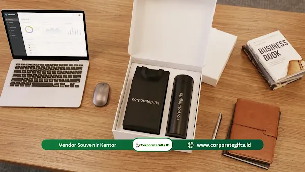

Corporate Gifts ID - Souvenir halalbihalal kantor adalah bingkisan, hampers corporate gift, atau cinderamata yang diberikan perusahaan kepada karyawan, klien, dan mitra bisnis dalam momen silaturahmi pasca Idul Fitri. Pada 2026, tren souvenir ini mengarah pada barang bernilai guna tinggi, sentuhan personalisasi elegan, dan material ramah lingkungan agar benar-benar terpakai sehari-hari, bukan sekadar formalitas tahunan yang berakhir menumpuk di gudang.
Pernahkah tim Anda panik mencari vendor bingkisan dadakan menjelang hari raya Idul Fitri? Jangan sampai klien prioritas atau tim andalan perusahaan merasa kurang diapresiasi akibat cinderamata seadanya yang dipesan pada menit-menit terakhir. Kesalahan ini berpotensi merugikan reputasi profesional dan citra perusahaan yang telah dibangun dengan penuh dedikasi.
Poin Kunci Souvenir Halalbihalal Kantor 2026:
- Nilai Fungsional Nyata: Fokus pada perlengkapan ibadah travel praktis, drinkware stainless steel tahan suhu, dan office stationery berkelas.
- Subtle Branding: Mengedepankan penempatan logo yang rapi, minimalis, dan elegan seperti grafir laser halus atau deboss presisi.
- Perencanaan 3-4 Minggu: Memulai pengadaan sejak jauh hari untuk mengamankan stok material, proofing sampel, dan jadwal pengiriman luar kota.
- Segmentasi Anggaran: Mengalokasikan tier paket sesuai target penerima (paket fungsional staf dan executive gift set klien VIP).
Apa Itu Souvenir Halalbihalal Kantor?
Hadiah korporat pada era modern telah bertransformasi dari sekadar pembagian sirup atau kue kering kalengan menjadi medium komunikasi strategis yang dikurasi secara matang.
Sebagai representasi budaya organisasi, cinderamata halalbihalal memiliki beberapa peran mendasar:
- Instrumen Komunikasi Strategis: Bingkisan ini merupakan wujud komunikasi apresiatif nonverbal dari manajemen kepada seluruh jajaran karyawan serta relasi bisnis eksternal.
- Cerminan Kepedulian Bisnis: Menunjukkan empati dan kepedulian perusahaan terhadap kesejahteraan serta kenyamanan ibadah para penerimanya.
- Penyambung Relasi Personal: Sangat efektif untuk mencairkan kembali komunikasi kerja sama yang sempat berjarak akibat kesibukan operasional harian.

Kurasi set gift box halalbihalal dengan tumbler custom grafir nama dan packaging rigid hardbox mewah.
Mengapa Perusahaan Perlu Menganggarkan Dana Khusus?
Alokasi dana untuk cinderamata silaturahmi bukan sekadar pengeluaran konsumtif, melainkan investasi relasi bisnis yang memberikan timbal balik nyata terhadap produktivitas dan loyalitas tim:
- Apresiasi dan Retensi Karyawan: Memberikan pengakuan tulus atas kerja keras selama setahun terakhir, yang terbukti mampu meningkatkan retensi talenta terbaik di perusahaan.
- Mempererat Silaturahmi Eksternal: Menjadi pintu masuk yang hangat untuk membicarakan peluang kolaborasi dan kontrak proyek baru pasca-libur panjang Idul Fitri.
- Membangun Employer Branding Positif: Perusahaan yang konsisten menghargai momen silaturahmi dengan hadiah berkualitas akan dipandang sebagai tempat kerja idaman oleh para profesional industri.
Apa Saja Tren Souvenir Halalbihalal Kantor 2026?
Karyawan dan mitra bisnis masa kini semakin mengapresiasi barang yang mendukung gaya hidup aktif dan berkelanjutan. Berikut 4 tren utama corporate gifting di tahun 2026:
- Personalisasi Nama (Custom Name Engraving): Menyematkan nama masing-masing penerima pada bodi tumbler atau sampul agenda memberikan sensasi eksklusif yang sangat dihargai.
- Keberlanjutan dan Durabilitas (Eco-Friendly): Material ramah lingkungan seperti kanvas organik tebal, bambu alami, dan stainless steel SUS 304 food-grade menggantikan barang plastik sekali pakai.
- Inovasi Kartu Ucapan Digital: Kemasan luar dilengkapi QR code interaktif yang mengarahkan penerima ke video ucapan Idul Fitri personal dari jajaran direksi perusahaan.
- Branding Subtil dan Elegan (Subtle Branding): Penempatan logo berukuran proporsional dengan teknik deboss atau laser grafir netral membuat cinderamata terlihat seperti produk ritel premium.
Ide Produk Souvenir Halalbihalal Kantor yang Relevan
Memilih kombinasi isi gift box kini semakin mudah dengan rekomendasi paket fungsional berikut:
- Perlengkapan Ibadah Travel Modern: Sajadah pocket antiair yang ringan, tasbih digital compact, dan sarung tenun berkualitas tinggi yang praktis dibawa saat mobilitas kerja.
- Executive Gift Set Kombinasi: Perpaduan notebook agenda kulit sintetis, pulpen rollerball metal, dan gantungan kunci eksklusif dalam hardbox bertekstur mewah.
- Drinkware Personal Berkualitas: Tumbler vacuum flask SUS 304 dengan sensor suhu digital yang menjaga minuman tetap higienis sepanjang hari di kantor.
- Tas Totebag Kanvas & Pouch Organizer: Tas serbaguna berdesain clean yang pas untuk membawa perlengkapan kantor harian maupun belanja ramah lingkungan.
Tabel Rekomendasi Kategori Souvenir Halalbihalal Kantor 2026
Berikut rangkuman perbandingan kategori souvenir halalbihalal beserta keunggulan manfaatnya:
| Kategori Souvenir | Rekomendasi Item | Target Penerima | Nilai Manfaat Utama |
|---|---|---|---|
| Perlengkapan Ibadah | Sajadah Travel Pocket & Tasbih Digital | Seluruh Karyawan & Staf | Praktis untuk ibadah di kantor maupun perjalanan dinas |
| Smart Drinkware | Tumbler SUS 304 LED Suhu Custom Grafir | Karyawan, Tim Operasional & Mitra | Menjaga hidrasi sehat dan mengurangi sampah botol plastik |
| Executive Gift Set | Hardbox 3-in-1 (Agenda Kulit, Pen Metal, Flashdisk) | Direksi, Manajer & Klien Prioritas | Mencerminkan prestise dan profesionalitas tinggi korporasi |
| Eco Apparel & Bags | Totebag Kanvas Tebal & Pouch Multi-kompartemen | Peserta Gathering & Mitra Usaha | Daya tahan bertahun-tahun untuk rutinitas belanja dan kerja |
Bagaimana Cara Memastikan Pengadaan Souvenir Berjalan Lancar?
Kelancaran proses produksi dan distribusi bingkisan halalbihalal sangat ditentukan oleh kedisiplinan jadwal pengadaan:
- Pesan 3-4 Minggu Sebelum Acara: Memberikan tenggat waktu yang cukup bagi vendor untuk mempersiapkan stok, kustomisasi logo, dan pengeringan sablon/print secara sempurna.
- Alokasikan Anggaran Secara Proporsional: Pisahkan bujet antara paket suvenir massal untuk gathering karyawan dan paket premium khusus untuk stakeholder kunci.
- Pilih Vendor Kredibel dan Bergaransi: Bermitralah dengan penyedia jasa yang memiliki workshop resmi, standar kontrol kualitas ketat, dan kesiapan menangani ekspedisi antar-pulau.
- Sempurnakan dengan Kartu Ucapan: Sertakan kartu ucapan Idul Fitri berdesain elegan dengan pesan apresiasi hangat untuk memberikan sentuhan personal yang menyentuh hati.
Kesimpulan dan Konsultasi Pengadaan
Souvenir halalbihalal kantor tahun 2026 bukan sekadar tradisi seremonial, melainkan jembatan emosional yang memperkuat loyalitas karyawan dan kemitraan bisnis jangka panjang. Melalui pemilihan item yang fungsional, kemasan yang berkelas, serta waktu persiapan yang matang, acara silaturahmi kantor Anda akan meninggalkan kesan mendalam yang tak terlupakan.
Konsultasikan konsep hampers dan souvenir halalbihalal perusahaan Anda bersama tim kurator profesional CorporateGifts.ID. Dapatkan penawaran harga terbaik dan katalog lengkap melalui layanan permintaan penawaran resmi kami hari ini.